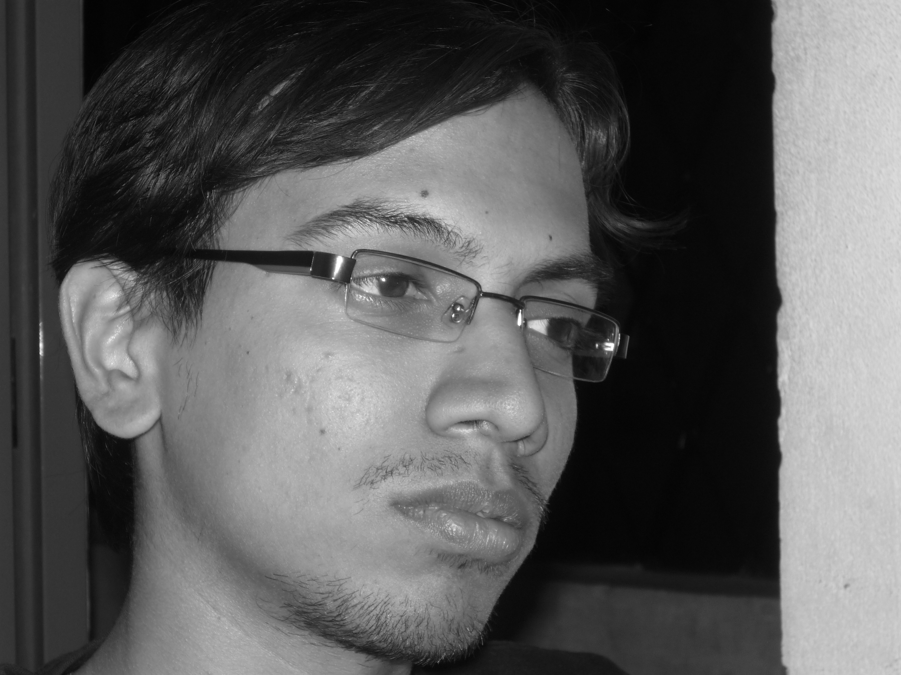

The Yearbook - Commemorating 2005-09!
Aditya Agrawal's profile information
Name - Aditya AgrawalBirthday - 24th Dec 1987
Email - aditya.agrawal@live.in
Address - B-36/40, Kabirnagar, Durgakund, Varanasi
Phone - 9849656019
Webpage - Link
Hobbies - rock...cars....wikipedia
WishList - lamborghini gallardo
Memorabilia - gonna be the booze parties
What would you want to be remembered as - rock lover; wikipedian
Future Plans - Choose Life. Choose a job. Choose a fucking big television, Choose a car...
Testimonials written to Aditya Agrawal
Aditya Agrawal's Album

{kind=link}
Default caption
Testimonials
For Abhijeet PagarePART 1
"Let's go to a doctor tomorrow and find out what limit of alcohol is OK for us. Then we need not tell our parents because there is nothing wrong about having it in limits."
This is what two big time boozers decided after we had a bottle of beer two years back (Incidentally, it was my first). Of course, he has now become rather sober while I am still going strong.
 It's ironic since he had been the one to introduce many of us to boozing; I being one of them. Back then during the summer months of 2007, we had those countless and amazing booze sessions. From my first day, I rather developed a strong liking for it. Those days, if he or I ever wanted to have a session, we did not even to say a word, just looking at each other's faces around 9 or 10PM was enough to convince the other. During one of the grand booze parties, Pagare said Main Jeet Gaya Kya in excitement and disbelief. Well, I can't give here the reference but that night forms one of the best memories I have from those days. : ) Now Club 8 has replaced NBH 148 as the venue and he is generally reluctant to join. Thus, those days can never come back.
It's ironic since he had been the one to introduce many of us to boozing; I being one of them. Back then during the summer months of 2007, we had those countless and amazing booze sessions. From my first day, I rather developed a strong liking for it. Those days, if he or I ever wanted to have a session, we did not even to say a word, just looking at each other's faces around 9 or 10PM was enough to convince the other. During one of the grand booze parties, Pagare said Main Jeet Gaya Kya in excitement and disbelief. Well, I can't give here the reference but that night forms one of the best memories I have from those days. : ) Now Club 8 has replaced NBH 148 as the venue and he is generally reluctant to join. Thus, those days can never come back.
Alcohol can be said to be one of the foundations of our close friendship, the other being the love for rock and metal. Pagare and I shared this this passion for listening rock music of all forms. From Doors to Metallica and LedZep to Pantera, we adored them all. Megadeth was a shared favorite. It started right in the 3rd sem and moved on. Whenever one of us would have discovered something new, it would be made known to the other. In the 3rd year, we used to attend every gig happening in the city. Escape became one of our most frequented and favorite hangout places. One day, we were so desperate that we went to a gig while it was raining throughout. However, being all soaked up did not stop us from head-banging and enjoying the gig to its fullest. We being slim and sane humans, were always hesitant to join the brutal moshing those HRL monsters used to do.
For Abhijeet Pagare
PART 2
However, during one of the gigs at OFD, he mustered enough courage to go into the pit and called me from the other side of the pit. Bam! We hit each other. That was followed by the monsters falling over us and me receiving a whale of a push by Sairam, the biggest of them all. This incident will always rest in my mind as a fond memory.
Riders on the Storm would see us working so passionately for the cause of rock. Scouting for organizers and bands to play was fun. Memories of the gig will always remain intact in my mind.
During Felicity 09, we briefly turned businessmen as well. I Chirag and Pagare sat down scratching our head to come upon a business idea to present in Bizwit. The first session was extremely funny and we had a good time laughing at each other's silly ideas. However, we came with an idea (secret
 ). I drafted it and send our entry - Dial-a-Delivery. Much to our disbelief, we got selected for the finals. I got busy and could not get the time to make the PPT. Pagare took up the job and the resulting PPT had no theme what-so-ever We reached the venue to present our idea rather unprepared. I was in a casual tee and some of the other participants were in handsome suits. I was hesitating to go ahead but Pagare took the 2nd slot with confidence. The simplicity and practicality of our idea stuck a chord with the judges - one a Dean at ISB and other - CEO of a startup. We bagged the 3rd prize beating our seniors who had one the last year. I was extremely delighted at the result. Btw, he still owes me and Chirag the party from the prize money. Maybe, we will start a business together one day. Who knows!
). I drafted it and send our entry - Dial-a-Delivery. Much to our disbelief, we got selected for the finals. I got busy and could not get the time to make the PPT. Pagare took up the job and the resulting PPT had no theme what-so-ever We reached the venue to present our idea rather unprepared. I was in a casual tee and some of the other participants were in handsome suits. I was hesitating to go ahead but Pagare took the 2nd slot with confidence. The simplicity and practicality of our idea stuck a chord with the judges - one a Dean at ISB and other - CEO of a startup. We bagged the 3rd prize beating our seniors who had one the last year. I was extremely delighted at the result. Btw, he still owes me and Chirag the party from the prize money. Maybe, we will start a business together one day. Who knows!
Our initial interaction was due to him being Chirag's roommate. During the initial period, I thought he was of the stud kinds considering his performances on the Freshers day and ragging time. That made him unappealing for a while but after sometime, I realized that he was different what I had initially perceived.
For Abhijeet Pagare
PART 3
Pagare is a great person to be friends with. His company was entertaining. I remember the pep talk he gave me when I had screwed up my grades in the 3rd sem and was being silly by thinking of not going home in the vacations. That really lifted me up. His prowess in convincing others was unbeatable. He could make you do the silliest and boldest of things.
He has gradually changed from what he was in the first two years. Back then he was this candid guy who always spoke his heart. He was someone who would never hide his frustrations and thus became one of the first to earn the Frustoo tag. However, starting 3rd year he has been making a conscious effort to become more mature. Sadly, that means less booze and no more BC while drinking. And who can forget his Abe Yaar punch line which used to make the frustrated side of others come out in open along with his. I really miss the old Pagare

But they say that nothing is permanent and so it was. The Microsoft party proved to be spoilsport in the party of our friendship. Thanks to me drinking more than what was human, I blabbed like an idiot and screwed it all up. I was too intoxicated to realize that I had lost a friend - and that one of my best. I could never have imagined that we would not share a drink for the coming 5 months. It was only in January that I apologized and tried to make up. We were coming back to good terms. CRI looked like a good old 5th sem gig and surely it was the buildup to the Maiden gig we were going to attend in Bangalore the next week. His refusal to come to the Maiden gig on the next day again saw our friendship hitting a bottom. It also made me realize that nothing could the old closeness back since he had lost interest in both the cornerstones of our friendship - booze and rock. On days, I feel grim to have lost such a close friend.
Message for you: We may not be best of friends now but never forget that you would always be close to my heart.
Song for you: Riders on the storm!
For Prashasti Gupta
Prashasti is one of the most intelligent people in our batch - I place her amongst the likes of Manish, Somani and Saraswat. Moreover, she is a sweet and simple girl who is going to reach great heights in her life.
I remember the first time I met her in the first sem. While walking towards our hostels after the workspace had closed, Chand introduced me to her and Shikha while going for a coffee. She was one of those simple girl next door stereotypes. However, with the course of time, she has made great stride in her outward personality and has become more suave. It reflects from her talking and dressing ways - from plain salwar suits to urbane shirts and jeans. Although we never became great friends, I have a lot of respect and admiration for her. I can now admit that I also had a slight crush on her during the initial weeks of the 3rd sem
Some memorable incidents - Once playing Truth and Dare at CS, I was given a task to propose her. Gawd, I fared miserably at that.
However the memory of this hilarious incident still manages to make me laugh. Then comes my first year bday treat to her - we could get nothing but a pack of Goodday at the coffee shop
Coming to Placements, I remember the first day well - Microsoft interviews - she was one of the top contenders of getting through the day 1 company and I was quite hopeful. However, it turned outta be a disappointing day for both of us - no one got through. But fate had something else in store for her. She got placed the next day itself. I got a party as well - this time it wasn't a pack of Goodday but a handsome treat at Pizza Hut
 After getting placed, she helped me with the placement process on numerous occasions.
After getting placed, she helped me with the placement process on numerous occasions.
Keep in touch!
All the best for your career!
For Aniket Sharma
PART 1
Aniket was the first person whom I met at IIIT-H while standing at a long queue near BLN's office. We had a lot of interaction in the initial weeks. He had an opinion on everything. He was particularly well-informed and could speak and write well.
We have a lot of common interests and qualities - a passion to understand and analyze politics and music, long-distance running, love for beer and spirits, etc.
He is one of the few chaps I have seen who has good friends across the batches. His prowess in talking to anyone whatsoever for any amount of time, gets him a lot of buddies. Always resilient and high in spirits - Main Jindaa Hoon anecdote
is a testimony to these qualities. Coupled with the infinite stamina he has, he can run endlessly. He also has a penchant to explore new places. He won't ever hesitate to entertain you with some of his skills - guitars and singing. Also, he is more careless and forgetful than me. Unbelievable, huh!
In spite of all these unique qualities, there are other reasons which make him a little annoying at times. Ability to talk at lengths is certainly a nice personality trait. But doing so without caring for the audience draws flak. Also, he has a peculiar view of things and hailing his views as the only correct ones is not particularly welcome.
However, we have shared quite a many incidents/anecdotes between us in our course of four years - which makes our friendship special.
Memories
Remember the visit to Araku valley on the batch trip. While most of the junta could not find anything worthwhile to do there, Aniket and I had this idea of trekking the steepest visible peak. The thrill of trekking and the satisfaction of reaching the hill-top were followed by a royal scolding from the big brother Chand and other organizers.
For Aniket Sharma
PART 2
In the 5th sem, we took the task of organizing the IIIT foundation day - two lazy fellows teaming up together for organizing an event was bound to result in a screwup
- the faculty could not get our invitation email and we had to bring Prof. PRK Rao to IIIT on an auto while it was raining. (Dr. Zulu would have killed us had he came to know that)
Come Felicity 08 and we had to face the ire of some of the meanest guys on Earth - Indian Ocean. That was indeed a very long day for both of us - leaving IIIT at 11 AM for the airport and coming back at 5AM on the next day. I won't forget the kind of relief we got when those fuckers left from the airport. However, we got a small reward for all the trauma - a full bottle of Smirnoff which we relished on the third day.
Something I will never forget is the 1500m and 800m races on the 3rd year sports day. 1st day in 1500, I was leading till the last lap of 200m and he passed me, swearing at me in the process. I was disappointed that I could not fight more closely. Come the next day morning, the 800m race, I was mentally set to not let him pass this time. And I held to that despite his charges till the last 50m and conceded. Though I lost, I had at least given him a challenge this time. : )
Some other memorable incidents are taking grass at Himank's room, and recently volunteering at Elections.
Wish you the best dude. Stay in high spirits!
For Kulbir Saini
Kulbir always used to wear this red t-shirt with Bomb Hacker printed on it, to the English class. Although some me told about his commitment to become a great hacker, I could not never really imagine that a thin, lanky Hariyanwi Chacha would become one of the networking greats at IIIT-H.
He is highly passionate about networks Linux and Open Source. However unlike most of the FOSStards, he has a penchant for making money for his work
His nickname, Dollar Bhai is a testimony to that. You will hardly find a fosstards with such sensibility. I appreciate that.
Though we are poles apart coming to our views on Microsoft : ) However we share the same view about software industry and its power in general.
Apart from a networking great, he is one of the most vocal guys of the batch. Taking digs at others is one of his favourite pastimes.
I could not possibly fathom who he's gonna be in the future - Next Richard Stallman/Eric Schimdt/Larry Page. But definitely he is gonna make it real big in life.
Keep in touch!
For Sunil Soni
We were neighbours in the first year. This guy used to have a smile for most of the time. Other times, he would be complaining about something or the other
I remember he had got some 200+ marks in AIEEE Maths and was particular good at Maths.
We had a lot of interaction durin Placements - He somehow got this stupid feeling that I had a role to play in his not getting through Microsoft. Why would I?
 I am not sure whether he still thinks so. He anticipated that he was gonna get thru both MS and DEShaw but as destiny would have it, he had to wait for almost a week to get placed. Hard times, those were for all of us. In his words, he got sick of having to see my face daily
I am not sure whether he still thinks so. He anticipated that he was gonna get thru both MS and DEShaw but as destiny would have it, he had to wait for almost a week to get placed. Hard times, those were for all of us. In his words, he got sick of having to see my face daily
All the best!
For Sri Harsha.B
Used to think of him as a complete jerk unless we interacted more during Felicity 08.
Though he might looks shabby, he actually is a very cheerful and helpful person. He cares much about his batchmates - true of a good Neta. This guy has got fantastic leadership and organizing skills. He has been working his hearts out in Felicities and the Farewells for the past 3 years.
All the best dude. Keep in touch
For Harsh
Harsh is one of the sophisticated guys of our batch. You will always find him smartly dressed.
I remember going to the Mushroom rock in a group in the 1st sem where he spoiled his newly bought trousers in one of the marshes. And he was rather upset at that.
One of the leading persons on the academic front as well - always a 9 ptr, MS intern and 6 IIM calls.

All the best for your coming time in Lucknow.
For Karan
PART 1a
Karan (I am one of the few people around to still use his first name) has been one of my best friends at IIIT.
This guy has got a sharp analytical mind and studies things in deep detail before taking a stand. Not to forget that he is an avid reader making him a library-frequenter. You can talk with him on almost everything under the sun - sports, politics, economics, history, etc.
He has always been supremely confident. Be it studies, oration or sports. He likes to stick to his arguments. Sometimes, arguments with him get heated up as well.
Only a few gather the courage to enter in a word-fight with him. I can take the honor of being one of those.
He has always been a career-oriented person. He has set goals and is someone for which career gets a priority over other aspects of life. Right from his starting days at IIIT, he had his guns aimed at getting an MBA from IIM. His kind of genuine belief in pursuing management is to be found in very few. Five years from now, don't get surprised if you see him in a swanky BMW talking the investment banking fundes. He has high aspirations in his life and with the kind of commitment and dedication he approaches things, he is definitely going to make it big.
For Karan
PART 1b
One could see him work overtime in the build-up to Felicity 08. Day in, day out, he worked meticulously and left no stones unturned. A lot of credit for making Felicity 08 the grandeur it was goes to him. He had a special connect with Felicity. Right from the first year, he played a very pro-active role in the organization of Felicity. It is tough to find a person with such prowess in event organization.
I have never seen anyone at so such amazing time management skills. One will hardly find his wasting his time. During his entire course of 4 years, he has always been up to something big - Studies (1st year), Sunday Carnivals, Other Campus Events (2nd year), Felicity (entire 3rd year), CAT preps followed by Placement Prep and then IIM GD/PI prep in the 4th year. Adding to that, he was one of those sincere chaps back in the 1st year. He would start solving the C assignment the day they were handed out while I could never start before Saturday. Although he cares so much about assignments, he is still sincere in spirit.
For Karan
PART 2
He likes to take a serious view on anything whatsoever. Where would one find a person who gives his 100% in a friendly match as if it were the tournament final? Anything he takes up, he does it with all his heart and soul behind it. You gotta watch him play TT or foosball!!
As a friend, he constantly motivates and provides astounding moral support. He always had a couple of cheering and motivating words to say whenever I was down. I remember an incident when I was not performing well in 2nd sem exams due to some other commitments; he sent me a series of 3 motivating SMSs. (I lost that phone
) It may sound childish now; back then it really mattered.
In other incident, I was very disappointed with my 3rd sem result at the beginning of the fourth sem. To that cause, I remember him giving me a nice pep talk in front of library where motivated me to go for nothing except a 10 pt. His words were a constant source of encouragement for me throughout the 4th sem and I came really close to it at 9.6.
One of his important personality traits is speaking his heart out. He holds no bar and speaks whatever he feels like. He can say a NO with pretty ease. That's commendable. Though it's good to talk straight, often it does not go down well with one's company. I personally feel that it's better to be a bit polished at speaking so that no one gets hurt.
The guy has a clear conscience. He had always been guided by his set of strong principles he had acquired from his school days. I strongly believed that he was one of those who never touch booze. However, he proved me wrong (much to my delight
) and his Felicity connect proved to be a reason strong enough to draw him to booze on the third night of Felicity 08. The booze-regulars comprising of Pagare, HImank, Chand and me always were on a lookout for any addition to our group. And we welcomed Karan whole-heartedly since he was the last person to join.For Karan
PART 3
The good times
We were the best of buddies for the most part of our first two years at college. I never imagined that I will have such a close friend ever. We used to share all that was happening in our lives - girls, grades, gadgets, etc.
We met on the 2nd day at IIIT. Starting from our first interaction in my room, I sensed that this guy is one of these smartasses - smartly dressed, fluent English, Reebok shoes, etc. We became good friends in no time. I really admired his helpful nature. He helped me a lot when I became ill during my first week at IIIT.
We both had a passion for knowledge and understanding various issues. We discussed, analyzed and debated on a plethora of topics. This was in spite of having different personalities - While Karan was one of those extrovert and limelight-hogging kinds, I preferred to stay more to myself. At times, we used to bet 5-Stars. I still owe him one.
I also credit my improved English speaking skills to the English-only chats we had in the first year.
We moved around the city a lot. Chirag, Karan and I went to Pizza Hut, Skyline hall and MPM numerous times in our first sem. Those rather inexpensive outings travelling in buses now seem more satisfying than going to the Little Italys and Tandoors. It was generally the two of us who decided our outings. We used to spent hours on fullhyd.com finding a place to go.
Those were the days, really.
We participated in a lot of quizzes and other lit events as a team. I will always cherish the events in the 2nd year which were highly rewarding - 2nd in Quiz and 3rd in DumbC.
Also, we were the only two people who were against the idea of TB formation. Luckily we our word did not prevail and TB has been one of the pillars of our IIIT life.
For Karan
PART 4
In a now hilarious yet memorable incident, Chirag and Pagare played a prank on him in the first sem by sending a proxy email from his account. Karan was enraged beyond the normal and swore to become a master of hacking in 10 days
and take revenge back on the Chirag and Pagare who did their best at apologizing. However, no amount of apologizing would have satisfied him. Poor boy. Has a long record of his accounts getting hacked.
The not-so-good times:
However, things began to change in the late 4th sem when a couple of ill-fated arguments took their toll on our friendship. Comes the 3rd year, he got busy in Felicity and I got busy in my own things. For the coming months till Felicity end, we rarely talked and whenever we did, it was something related to Felicity. I had my part to play as well. He had to miss the Goa trip due to my last-minute plan changes. I could not really get a time to apologize since we anyways did not interact much then.
Back-in-Black:
Things become more normal in the 4th year. Last time we went boozing, we went down the memory lane and tried to revisit some of our first year days. And we affirmed each other that we wont ever let those memories fade.
Message for you:
Think twice before speaking
Become the Citibank CEO someday